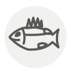

Bar
Sea bass
| Nom latin | Dicentrarchus labrax |
|---|---|
| Famille | Poissons & fruits de mer |
| Origine | Atlantique Nord-Est & Méditerranée |
| Saison | septembre – février |
| Goût | Délicat · Iodé · Sucré · Doux |
| Prix courant | 15–30 €/kg |
Ce que c’est
La France l’appelle bar au nord et loup en Méditerranée — le loup, pour sa façon de chasser. Un bar de ligne porte une étiquette passée dans l’ouïe et se vend plusieurs fois le prix d’un poisson de filet ou d’élevage.
En cuisine
Sa peau croustille mieux que celle de presque tout poisson. Séchez-la bien, pressez-la à plat la première minute, et ne la bougez pas.
S’accorde avec
Fenouil Citron Huile d’olive Thym Vinaigre de vin blanc Tomate Beurre Aneth
Entre aussi avec
Huile d’olive au citron Bonnotte de Noirmoutier Câprons (câpres à queue) Feuilles de câprier Citron de Menton Pollen de fenouil
De saison en même temps
Églefin Saint-Pierre Carrelet Lieu noir Truite Vive
Une erreur ici, ou un oubli ? Dites-le nous